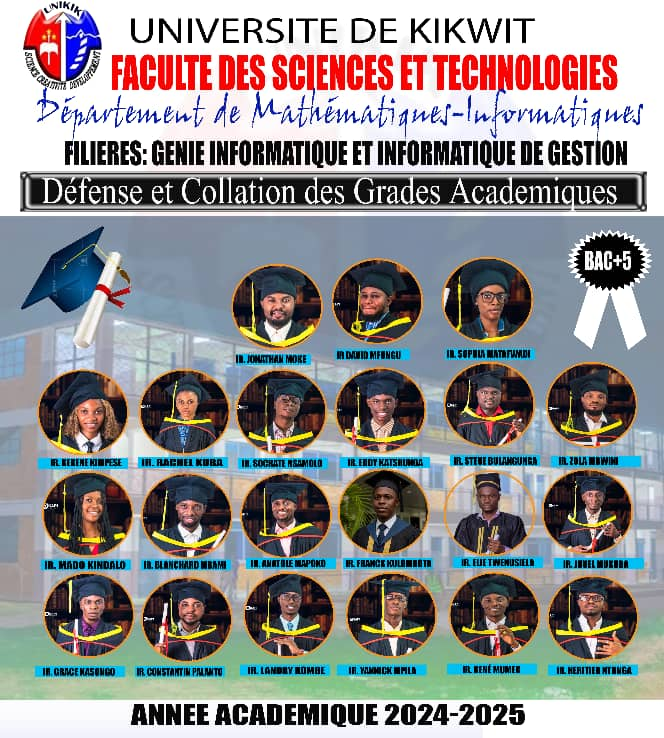

Notre promotion a suivi un parcours de quatre années d'études en informatique, explorant des domaines variés allant du développement logiciel aux systèmes intelligents. Ensemble, nous avons relevé des défis académiques, participé à des projets innovants et préparé nos mémoires de fin d'études.

Notre promotion réunie pour célébrer nos années d'études
29
Étudiants
5
Années d'études
15
Projets réalisés
3
Domaines de spécialisation
Notre vision
Cette promotion se distingue par sa cohésion, sa curiosité scientifique et sa capacité à innover. Nos travaux de fin d'études reflètent notre engagement à produire des solutions pratiques et créatives pour répondre aux besoins du monde numérique actuel.